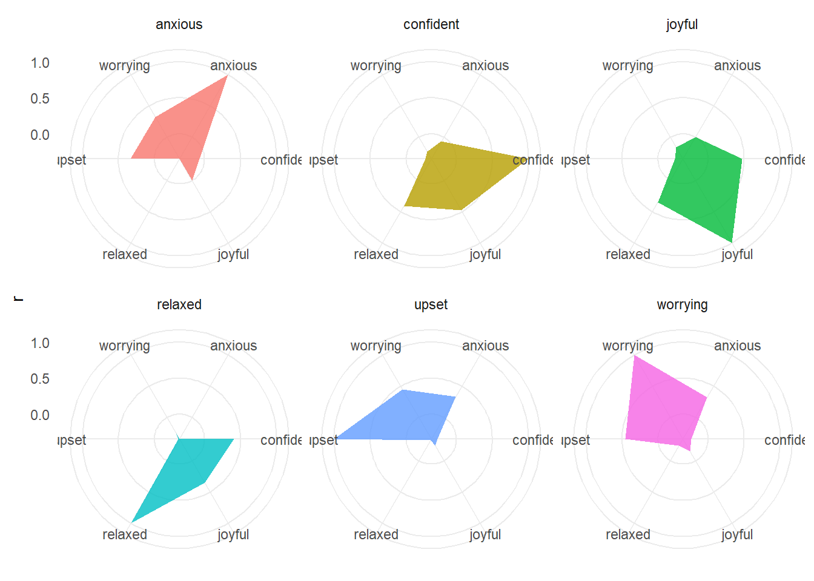
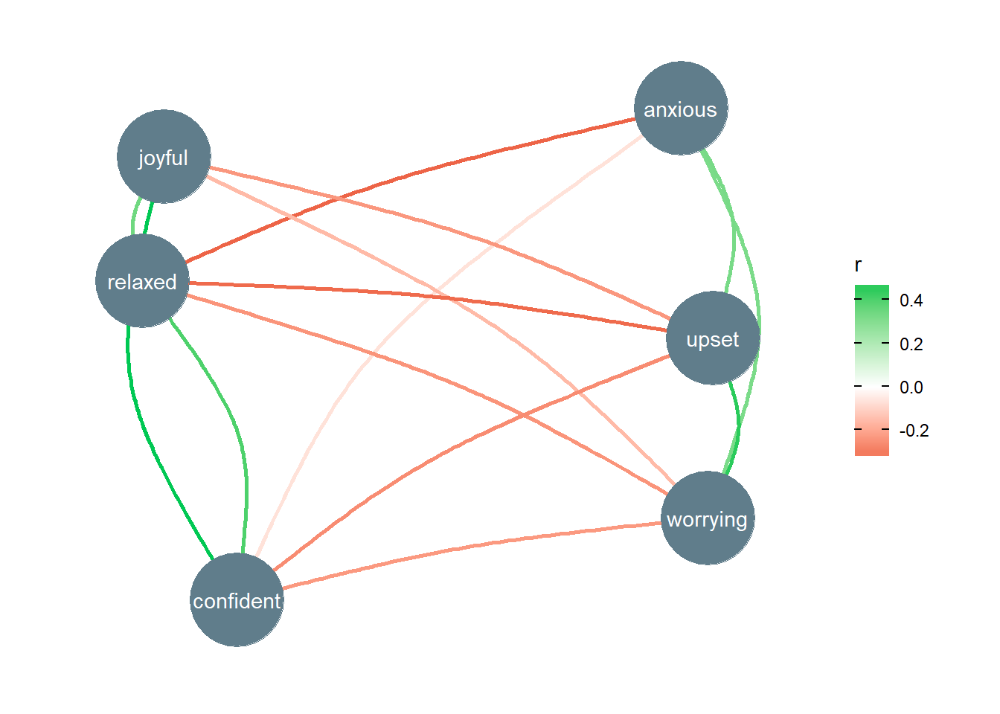

Recently, Daniel (author of great packages such as sjPlot and ggeffects) and I (from the psycho package), decided to unite our forces to provide flexible, stable and lightweight tools for facilitating data analysis. The easystats project, altough in very active developpement, already contains some useful functions.
One of such can help creating pretty correlation graphs and plots. correlation is a small package designed to compute correlations in a format that can easily be fed into plotting packages.
Packages
As the correlation package is not (yet) on CRAN, you need to install it from github:
install.packages("devtools")
devtools::install_github("easystats/correlation")
library(correlation)Let’s also install report, another package from the easystats project.
install.packages("devtools")
devtools::install_github("easystats/report")
library(report)These other packages will be used for data and plotting.
library(dplyr)
library(forcats)
library(psych)
library(ggplot2)
library(tidygraph)
library(ggraph)
library(plotly)The data
From psych’s description:
State Anxiety was measured two-three times in 11 studies at the Personality-Motivation-Cognition laboratory. Here are item responses for 11 studies (9 repeated twice, 2 repeated three times). In all studies, the first occasion was before a manipulation. In some studies, caffeine, or movies or incentives were then given to some of the participants before the second and third STAI was given.
# Load the data
df <- psych::sai %>%
filter(time < 4) %>%
mutate(time = as.factor(time),
id = as.character(id)) %>%
select(time, relaxed, joyful, confident, anxious, worrying, upset)
# Report the data
report(df)## The data contains 5308 observations of the following variables:
## - time: 3 levels: 1 (n = 3032); 2 (n = 1229) and 3 (n = 1047).
## - relaxed: Mean = 2.49, SD = 0.90 [1.00, 4.00], 98 missing.
## - joyful: Mean = 1.85, SD = 0.87 [1.00, 4.00], 117 missing.
## - confident: Mean = 2.69, SD = 0.91 [1.00, 4.00], 76 missing.
## - anxious: Mean = 1.70, SD = 0.85 [1.00, 4.00], 61 missing.
## - worrying: Mean = 1.63, SD = 0.90 [1.00, 4.00], 45 missing.
## - upset: Mean = 1.37, SD = 0.70 [1.00, 4.00], 48 missing.Correlation
The main function of the correlation package is correlation(), with which you can tweak the correlation parameters (partial, semi-partial, Bayesian…).
# Do the correlation
cor <- correlation(df)
# Examine the output
head(cor)| Parameter1 | Parameter2 | r | t | DoF | p | CI_low | CI_high | CI_level | Method |
|---|---|---|---|---|---|---|---|---|---|
| relaxed | relaxed | 1.00 | Inf | 5208 | 0 | 1.00 | 1.00 | 0.95 | Pearson |
| joyful | relaxed | 0.35 | 26.97 | 5184 | 0 | 0.33 | 0.37 | 0.95 | Pearson |
| confident | relaxed | 0.41 | 32.39 | 5202 | 0 | 0.39 | 0.43 | 0.95 | Pearson |
| anxious | relaxed | -0.35 | -26.65 | 5201 | 0 | -0.37 | -0.32 | 0.95 | Pearson |
| worrying | relaxed | -0.24 | -18.20 | 5207 | 0 | -0.27 | -0.22 | 0.95 | Pearson |
| upset | relaxed | -0.33 | -25.50 | 5203 | 0 | -0.36 | -0.31 | 0.95 | Pearson |
Contrary to the majority of packages, the correlation() function does not return a nice matrix, but rather a dataframe with pairwise correlations as rows. Altough this format will be useful for further plotting, we can always transform it to a table using the report package.
cor %>%
report() %>%
to_table()| Parameter | relaxed | confident | joyful | anxious | upset |
|---|---|---|---|---|---|
| confident | 0.41*** | NA | NA | NA | NA |
| joyful | 0.35*** | 0.48*** | NA | NA | NA |
| anxious | -0.35*** | -0.07*** | -0.00 | NA | NA |
| upset | -0.33*** | -0.26*** | -0.24*** | 0.33*** | NA |
| worrying | -0.24*** | -0.23*** | -0.16*** | 0.33*** | 0.45*** |
Heatmaps
Hetmaps can be nicely improved by removing the upper triangular using the remove_triangular() function.
p <- cor %>%
remove_triangular() %>%
ggplot(aes(x=Parameter1, y=Parameter2, fill=r)) +
geom_tile() +
scale_fill_gradient2(low = "#d50000", high = "#00C853") +
theme_minimal() +
theme(axis.title = element_blank())
ggplotly(p)Bar plots
But enough with the heatmaps! There are other ways to present correlations. For instance, bar charts:
p <- cor %>%
filter(Parameter1 != Parameter2) %>%
ggplot(aes(x=Parameter1, y=r, fill=r)) +
geom_bar(stat="identity") +
scale_fill_gradient2(low = "#d50000", high = "#00C853") +
theme_minimal() +
theme(axis.title.x = element_blank()) +
facet_wrap(~Parameter2) +
theme_minimal() +
theme(axis.title.x = element_blank(),
axis.text.x = element_text(angle = 45, hjust = 1))
ggplotly(p)Radar chart
Or, if we want to get fancier:
# Create a small convenience function
coord_radar <- function (theta = "x", start = 0, direction = 1)
{
theta <- match.arg(theta, c("x", "y"))
r <- if (theta == "x")
"y"
else "x"
ggproto("CordRadar", CoordPolar, theta = theta, r = r, start = start,
direction = sign(direction),
is_linear = function(coord) TRUE)
}
p <- cor %>%
ggplot(aes(x=Parameter1, y=r, group=Parameter2, fill=Parameter2)) +
geom_polygon(alpha=0.8, show.legend = FALSE) +
theme_minimal() +
theme(axis.title.x = element_blank()) +
facet_wrap(~Parameter2) +
coord_radar()
p
Graphs
However, one of the most interesting way of visualising correlations is through graphs. This can be done easily using the powerful ggraph package.
set.seed(999)
cor %>%
remove_triangular() %>%
as_tbl_graph() %>%
ggraph(layout = 'drl') +
geom_edge_arc(aes(colour=r), curvature=0.1, edge_width=1) +
geom_node_point(color="#607D8B", size=22) +
geom_node_text(aes(label = name), colour="white") +
scale_edge_color_gradient2(low = "#d50000", high = "#00C853") +
theme_graph() +
scale_x_continuous(expand = expand_scale(c(.10, .10))) +
scale_y_continuous(expand = expand_scale(c(.10, .10)))
Interested by the easystats project?
The easystats project is very contributor-friendly, just share your ideas, opinions or suggestions on the issues section.